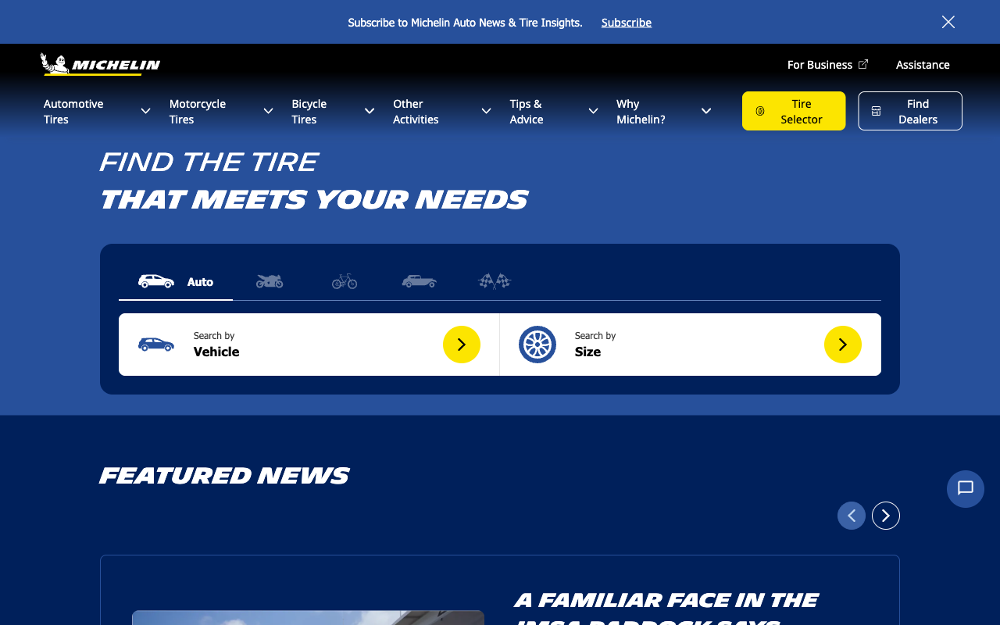

S1
Sanity
Desktop
PASS
Homepage loads cleanly with no blocking errors
- Steps
- Navigate to https://www.michelinman.com/ → Dismiss consent banner → Confirm title and URL
- Expected
- Homepage loads, title reflects Michelin USA, no navigation errors
- Actual
- Title 'Explore Michelin Tires, Products & More | Michelin USA' loaded, consent banner dismissed successfully
